Within OpenEMR there are a wide array of reports you can generate which may be useful for your practice. These include general reports such as appointment and encounter reports, billing reports, and patient specific reporting.
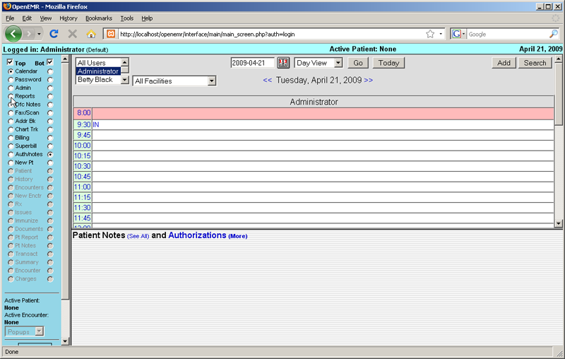Most general reporting tools can be found by selecting 'Reports' from the navigation menu at left.
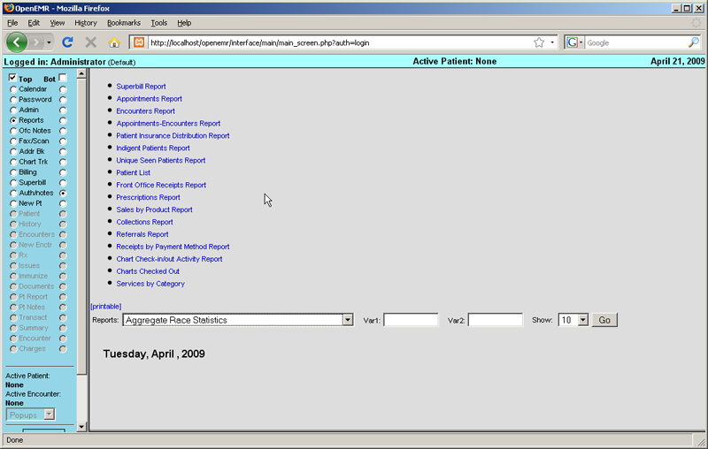Examples of some commonly used reports:
The Superbill Report presents you with a dialog for selecting a date range.
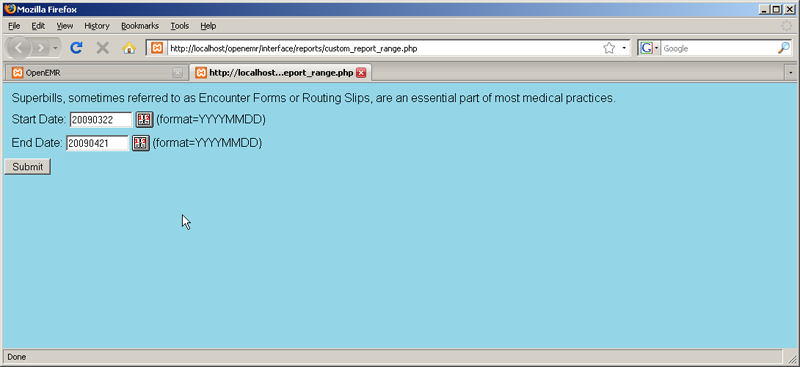Clicking 'Submit' produces a report for each encounter in the date range, and shows patient demographics and insurance information
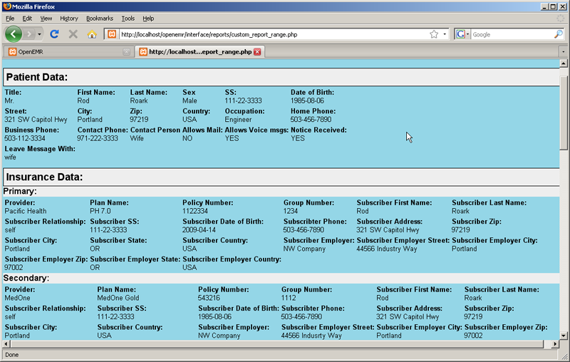As well as the billing codes and amounts.

The Appointments Report gives you a list of appointments for a given provider, or for all providers, in a specified date range. It can be sorted by clicking on any of the four column headings.
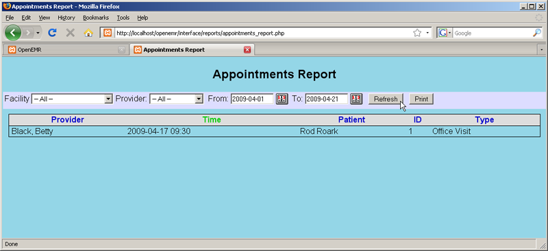The Appointments and Encounters Report gives you a useful cross-reference of appointments with their corresponding encounters. This allows you to easily spot many types of errors, such as appointments with missing encounters, encounters with missing appointments, missing charges, and authorizations or justifications that are required but not done.
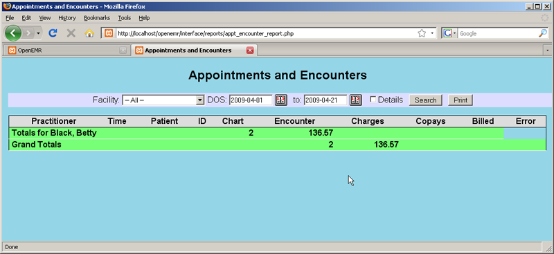The Insurance Distribution report shows you how many patients seen over a given time period use each kind of insurance.
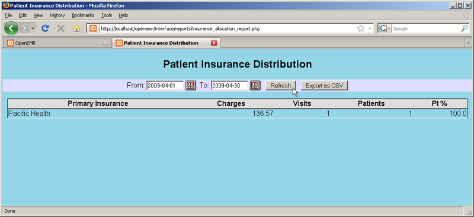The Indigent Patients report lists all encounters for patients that were seen without insurance. (None shown here.)
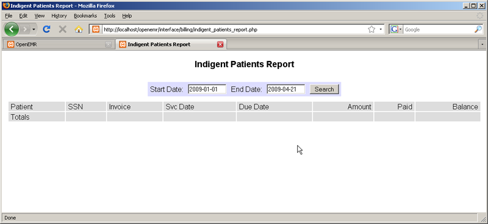OpenEMR also allows you to create custom reports using the Database Reporting section of Administration. Some examples have been included by default.

From the main Billing page select 'Reports'.
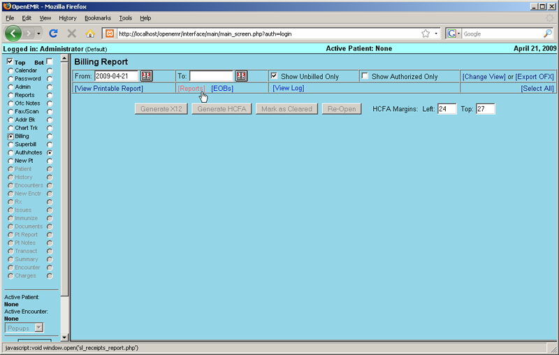This is the Cash Receipts report. It breaks down gross income by provider for a given time period.

The user can also elect to see a detailed breakdown of cash receipts, itemizing each procedure for which a charge was made.
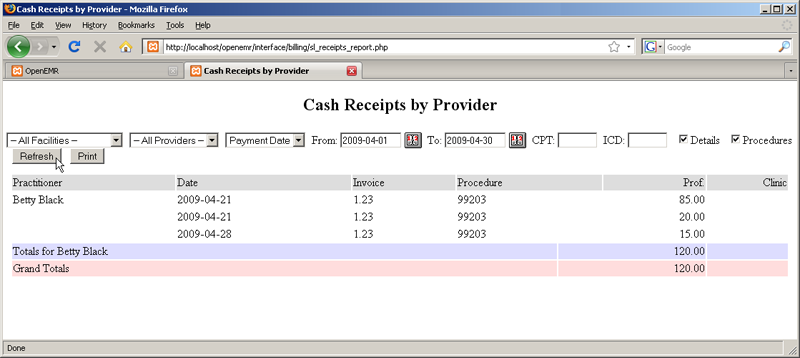When a patient is active within the system, the user has the option of generating a report for that specific patient. To do so, click on 'Pt Report' which is now visible in the navigation menu.
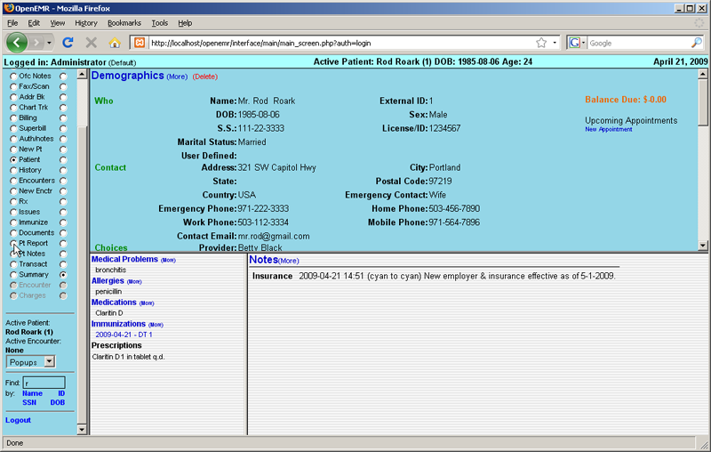The user can choose to include or omit a wide variety of patient information. When satisfied with your selections, click 'Generate Report'.
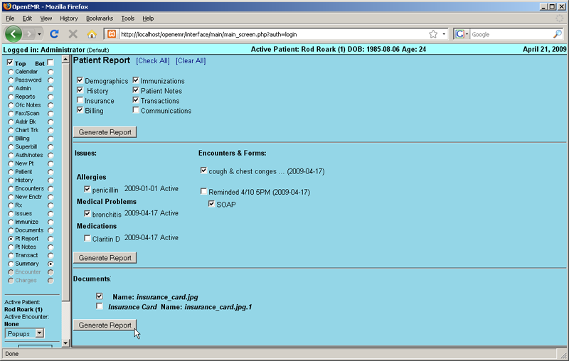This produces a report including all the specified patient information.
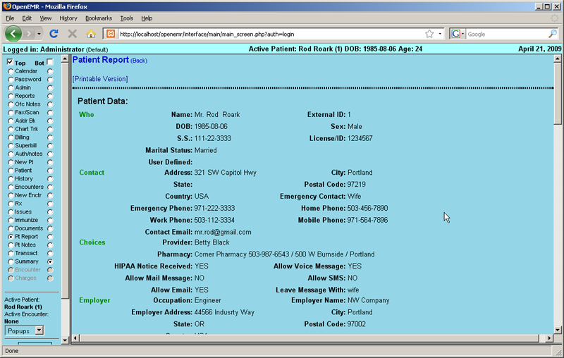